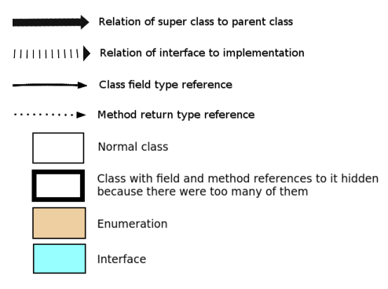

JavaInspect - Utility to visualize java software
Table of Contents
- download
- other applications hosted at svjatoslav.eu
- Program author:
- Svjatoslav Agejenko
- Homepage: http://svjatoslav.eu
- Email: mailto://svjatoslav@svjatoslav.eu
1 General
Goal: simplify/speed up understanding the computer program code by automatically visualizing its structure.
JavaInspect is a Java library that you can embed into your Java project with a few lines of Maven configuration and then visualize any part of your Java program structure with few simple JavaInspect API calls at application runtime.
JavaInspect uses Java reflection to discover class relations and structure and produces GraphViz dot file that describes your application. Then launches GraphViz to generate bitmap graph in PNG format on your Desktop directory.
2 Current status
This is simple utility, quickly written. Tested on GNU Linux (can be relatively simply ported to other operating systems too). So far I used it for my own needs. There might be bugs and missing features. Feedback and code contributions are welcome.
3 Example graphs
Example visualization of Sixth project: architecture graphs.
A very simple example:
{kind=link}
Graph legend:

4 Usage example 1
This example demonstrates generating of class graph from hand picked classes.
// Create graph final ClassGraph graph = new ClassGraph(); // While classes and objects can be immediately passed to ClassGraph // constructor as arguments, it is also possible to add them one by // one as in the following example. // Add some object to the graph. graph.addObject(graph); // Add some class to the graph. graph.addClass(Utils.class); // Produce bitmap image titled "JavaInspect.png" to the user Desktop // directory and keep intermediary GraphViz DOT file for reference. graph.generateGraph("JavaInspect", true);
Result:
- Generated DOT file: JavaInspect.dot
- Generated PNG image: JavaInspect.png
{kind=link}
5 Usage example 2
Recursively scan current directory for Java source code and attempt to detect class names from there to be added to the graph.
graph.addProject("."); // Blacklist example classes from being shown on the graph graph.getFilter().blacklistClassPattern( "eu.svjatoslav.inspector.java.structure.example.*"); // do not show single classes with no relationships on the graph graph.hideOrphanedClasses(); // Produce bitmap image titled "JavaInspect full project.png" to the // user Desktop directory. graph.generateGraph("JavaInspect full project");
Result:
- Generated PNG image: JavaInspect full project.png
{kind=link}
6 Embedding JavaInspect in your Maven project
Declare JavaInspect as dependency:
<dependencies> ... <dependency> <groupId>eu.svjatoslav</groupId> <artifactId>javainspect</artifactId> <version>1.3</version> </dependency> ... </dependencies>
Add Maven repository to retrieve artifact from:
<repositories> ... <repository> <id>svjatoslav.eu</id> <name>Svjatoslav repository</name> <url>http://www2.svjatoslav.eu/maven/</url> </repository> ... </repositories>
7 Requirements
8 TODO
- BUG: Should not hide references if there are too many of them to classes if referring classes are not visible anyway because of blacklist/whitelist rules. Basically reference counting should exclude not visible classes.
- BUG: Current code is quite messy (because of lack of time) things were implemented ad-hoc. Needs cleanup/refactoring for better readability.
- FEATURE: add dark theme
- FEATURE: sort Class fields by alphabet
- FEATURE: visualize also concrete field values so it could be used as ultra cool runtime logging framework
- FEATURE: possibility to visualize structure and data from JVM snapshot
- FEATURE: possibility to attach to remote process to visualize data/structure using JVM debug port and mechanism.
- FEATURE: possibility to attach to JVM using JVM agent
- FEATURE: possibility to script javainspect behavior
- FEATURE: possibility to select classes/fields/values to be visualized in SQL like syntax
- FEATURE: configurable maven plugin to generate graphs as part of the project build/release process